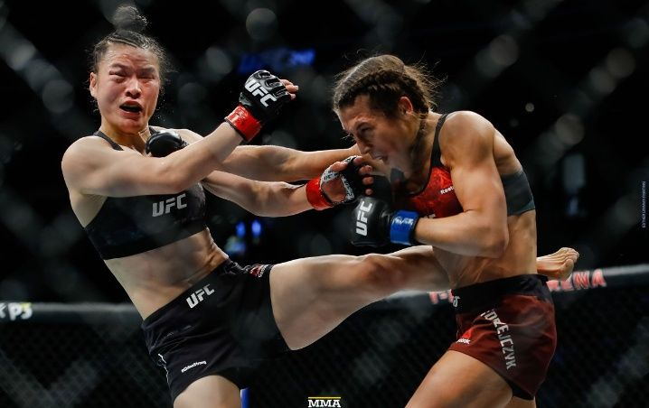
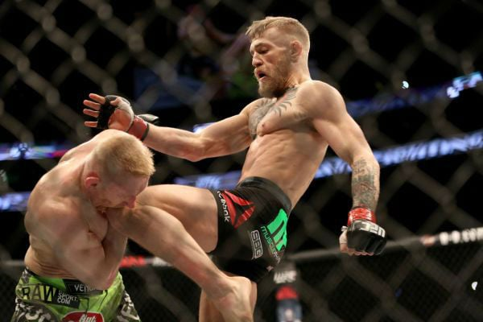
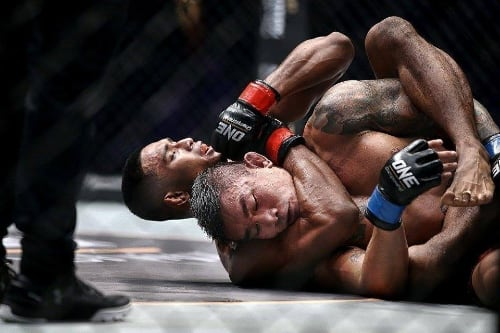

Las raíces atribuidas a las artes marciales mixtas modernas llegan hasta los antiguos Juegos Olímpicos griegos, donde existían sistemas de combate más antiguos y documentados como el pancracio u otras artes marciales con origen asiático como el Lei Tai. El origen actual de las artes marciales mixtas es difuso, partiendo de varias competiciones llevadas a cabo en Europa, Brasil, Japón y Estados Unidos a inicios del siglo xx. El concepto de las artes marciales mixtas suele considerarse erróneamente como sinónimo de campeonatos de vale tudo originados en Brasil, así como de deportes de combate como el full contact y el kickboxing; o prácticas derivadas de las artes marciales orientales y de los deportes de contacto occidentales que demostraron su efectividad en torneos deportivos.
   Volver a la página principal